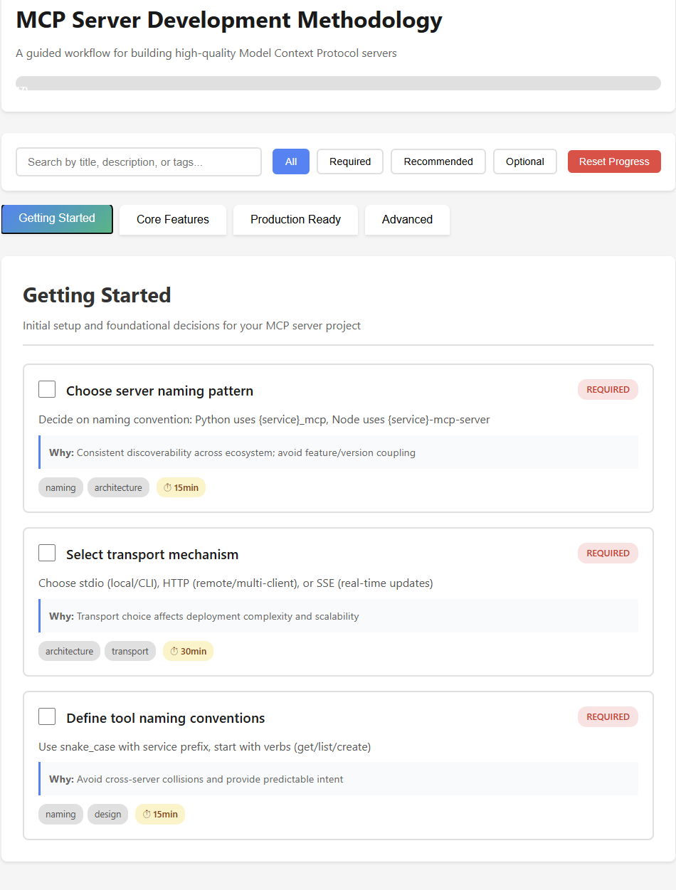
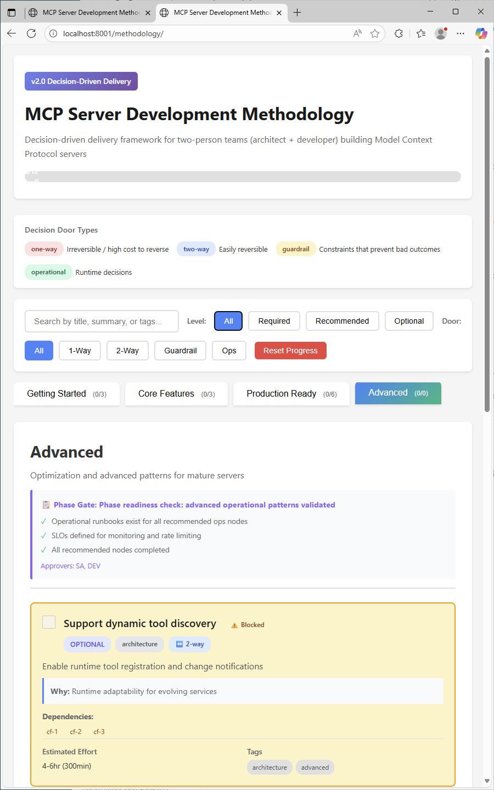
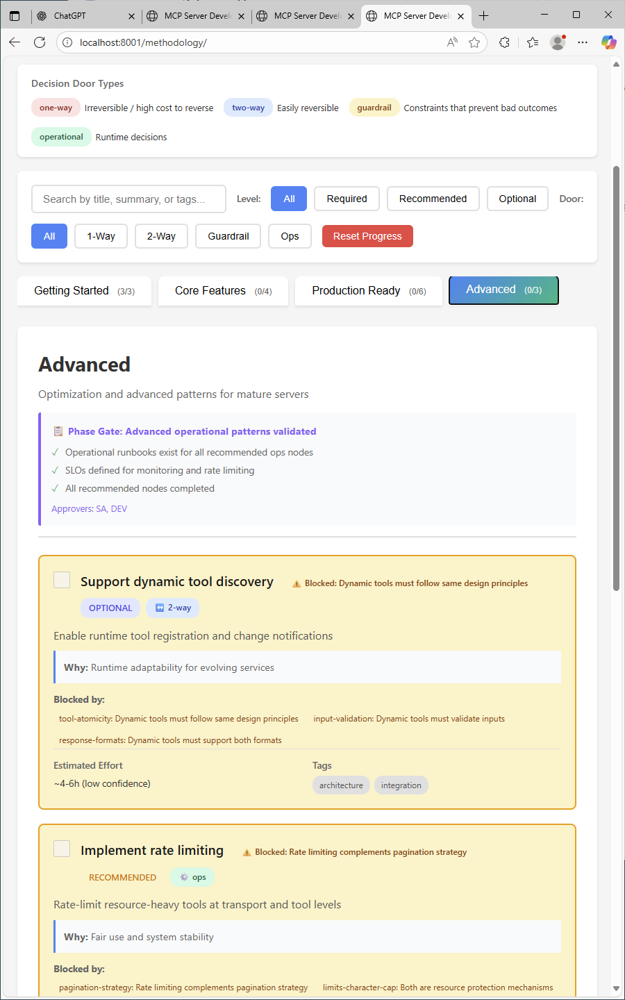
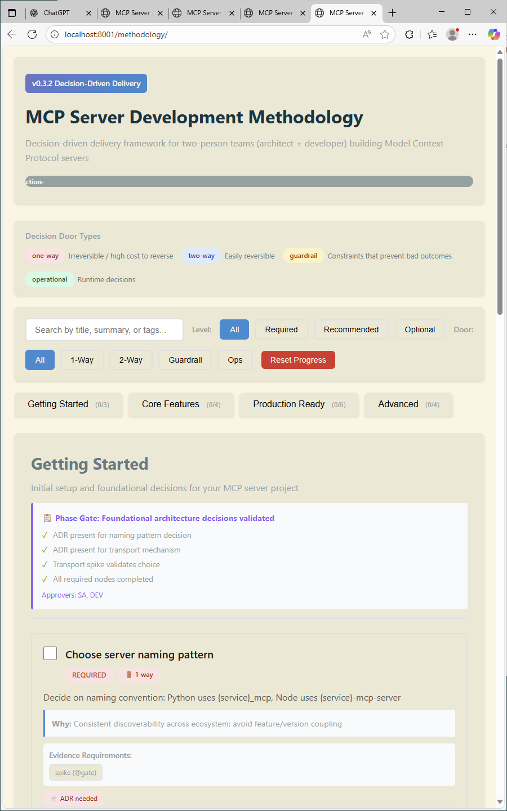
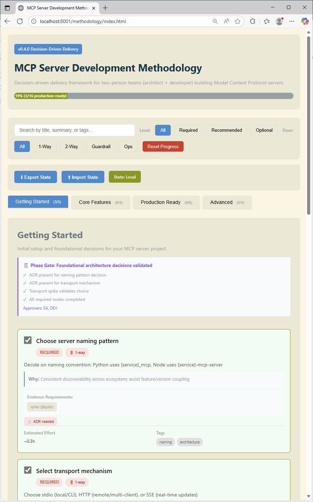
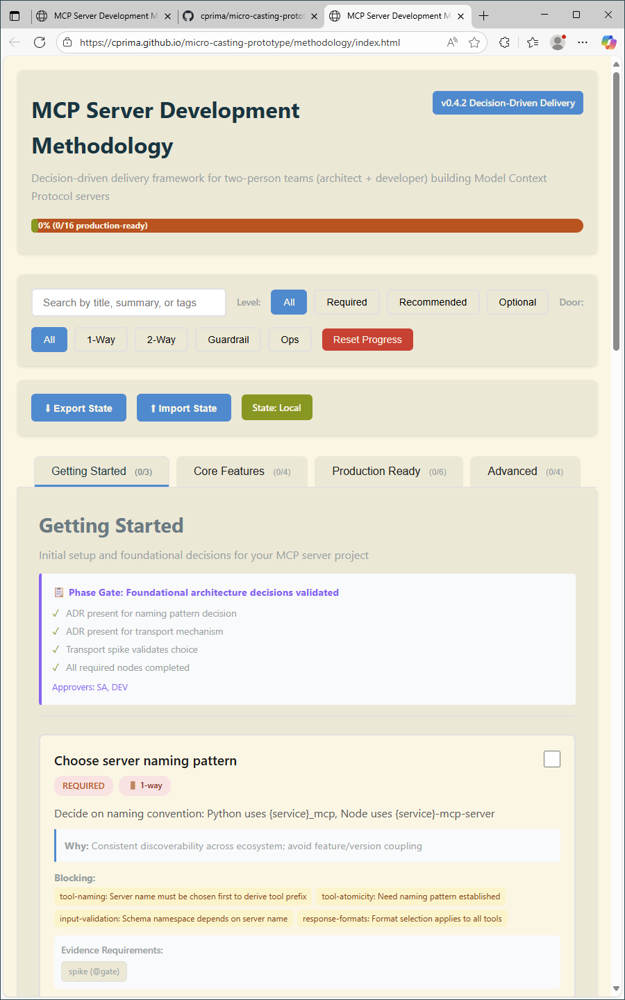

The Origin Story
This methodology began as an Anthropic Claude skill designed to guide the development of Model Context Protocol (MCP) servers.
The original skill can be found at:
github.com/anthropics/skills/blob/main/mcp-builder/SKILL.md
Through iterative refinement and user feedback, it evolved from a static checklist into a decision-driven delivery framework
with evidence gates, typed decisions, and transparent accountability.
The journey began with the Anthropic Claude skill, providing a foundational checklist-based approach
to MCP server development. This initial version focused on best practices and prescriptive steps.
Initial Features:
- Static best-practices checklist
- Phase-based compliance model
- Basic categorization of development tasks
- Simple progress tracking

v0.1.0 - Checklist-Based Approach
A paradigm shift from checklist compliance to decision-driven delivery. Introduced the concept of
decision types, evidence gates, and the distinction between reversible and irreversible choices.
Major Changes:
- Decision Types: 1-way doors (irreversible), 2-way doors (reversible), guardrails, operational
- Evidence Gates: Validation checkpoints (G0-G5) based on risk and reversibility
- Artifacts: ADR.md, CONTRACT.yaml, EVIDENCE.json
- Collaboration Model: Clear architect + developer workflow
Philosophy Shift: From phase compliance → to decision evidence flow

v0.2.0 - Decision-Driven Framework Emerges
User feedback revealed schema noise: "good model, but noisy → UI feels heavy." This version
addressed redundancy, verbosity, and premature optimization through comprehensive schema cleanup.
Schema Improvements:
- Sparse Encoding: Removed null/empty fields → 38% size reduction
- Semantic IDs: auth-oauth21 vs pr-3 for human readability
- Evidence Policy: Requirements specification vs pre-filled stubs
- Explicit Blocks: Dependencies with human-readable reasons
- Effort Ranges: Honest uncertainty with confidence levels
- Tag Canonicalization: 20 → 12 canonical tags
- Computed Types: Derived from tags at render time

v0.3.0 - Clean, Sparse Schema
Final polish for production deployment. Enhanced readability with Solarized Light theme,
added comprehensive in-page documentation, and prepared for GitHub Pages deployment.
Production Enhancements:
- Solarized Light Theme: Professional, readable color scheme with proper contrast
- Comprehensive Footer: In-page reference for all concepts (door types, evidence, tags, ADR)
- GitHub Pages Ready: .nojekyll, redirect page, deployment guide
- Attribution: Author credit and source citation to Anthropic Skills
- Documentation: README, setup guide, screenshots
- Mobile Responsive: Works seamlessly on all screen sizes
Ready for deployment: Complete with documentation, styling, and deployment infrastructure

v0.3.2 - Production-Ready with Solarized Light Theme
A fundamental architectural shift: separating immutable catalog from mutable state. This version introduces
portable state management with import/export functionality, enabling team collaboration and version control.
Major Features:
- State Separation: Clean split between data.json (catalog) and state.json (progress)
- Smart Export: One-click export with filename based on server naming pattern decision
- Import with Reconciliation: Handles catalog evolution gracefully (orphan detection, new nodes)
- SHA-256 Fingerprinting: Integrity verification for both catalog and state
- Backward Compatibility: Automatic migration from v0.3.x localStorage format
- Sparse Encoding: Omit empty fields for smaller state files
- State Badge: Visual indicator showing state source (local/file/none)
Portable
Team Collaboration
Workflow transformation: From localStorage-only → to shareable, versionable state files

v0.4.0 - State Management Revolution with Import/Export Functionality
Introduction of metadata-driven decision input fields, enabling users to capture decision values
directly within the UI. This scalable architecture allows any decision node to specify input fields
through JSON metadata, with generic rendering and state persistence.
Major Features:
- Decision Input Fields: Capture decision values (e.g., server naming pattern) directly in UI
- Metadata-Driven: Input fields defined in data.json via decision_input property
- Generic Rendering: Single renderDecisionInputs() function handles all input types
- State Integration: Decision values saved to state.progress[nodeId].decision_value
- Smart Exports: Export filenames use decision values (e.g., analytics_mcp-state-2025-10-23.json)
- Placeholder System: Contextual hints guide user input
From static documentation → to interactive decision capture with smart filename generation
A comprehensive UX overhaul focused on user satisfaction, visual feedback, and at-a-glance progress tracking.
Added interactive phase flow diagram, checkbox micro-animations, seamless tab integration, and user-friendly tooltips.
Major Features:
- Checkbox Satisfaction: Scale + glow + shake animations with ephemeral "✔ Decision recorded" feedback
- Tab Merging: Seamless active tab integration with panel using transparent borders (no flicker!)
- Phase Flow Diagram: Interactive SVG visualization showing phase progression with completion colors
- Dynamic Completion Colors: Beige (0%) → Yellow (partial) → Green (100%) with "next" phase glow
- Bidirectional Updates: Diagram updates when completing or un-completing nodes
- User-Friendly Tooltips: State badge explanations + rich evidence badge descriptions
- Version Harmonization: 3-version strategy (Frontend v0.4.2, Catalog 0.3.0, State 0.4.0)
- Accessibility: All animations respect prefers-reduced-motion
Transformation: From functional interface → to delightful, informative user experience

v0.4.2 - UX Polish & Interactive Phase Flow Visualization